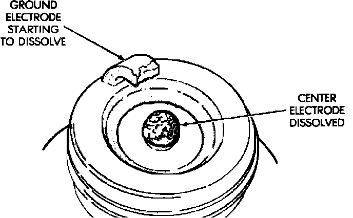

Premature Electrode Wear - Preignition Damage
Preignition Damage:

Preignition damage is usually caused by excessive combustion chamber temperature. The center electrode dissolves first and the ground electrode dissolves somewhat latter. Insulators appear relatively deposit free. Determine if the spark plug has the correct heat range rating for the engine. Determine if ignition timing is over advanced, or if other operating conditions are causing engine overheating. (The heat range rating refers to the operating temperature of a particular type spark plug. Spark plugs are designed to operate within specific temperature ranges. This depends upon the thickness and length of the center electrodes porcelain insulator.)